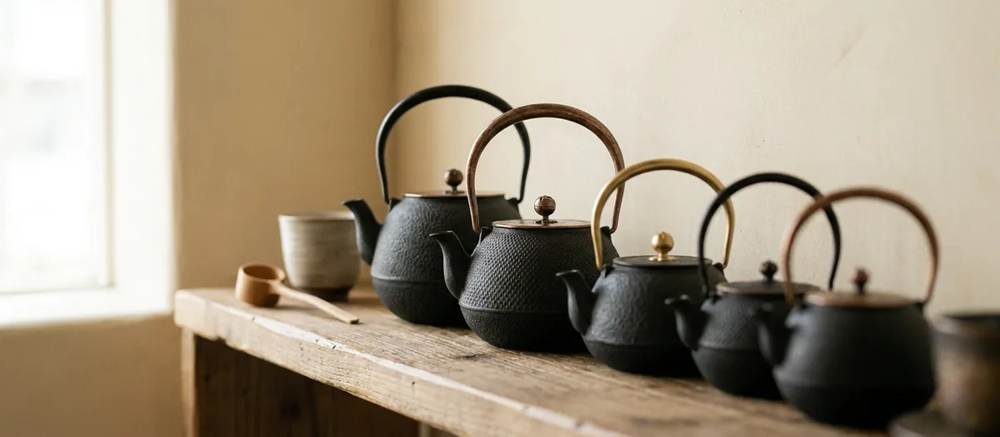

ガイド ／ 値段と相場
南部鉄瓶の値段・相場ガイド

南部鉄瓶の値段は1万円台から100万円を超えるものまであります。同じ名前で、なぜここまで違うのか。各工房の公式ショップに実際に並んでいる価格を確かめながら、差が生まれる理由を整理します。
01値段の幅は、想像よりずっと広い
南部鉄瓶の値段は1万円台から、上は100万円超まであります。同じ「南部鉄瓶」という名前で、これだけの開きがあるのです。まず、公式オンラインショップを持つ工房で実際に販売されている価格帯を見てください。
| 工房 | 鉄瓶の価格帯 | 特徴 |
|---|---|---|
| 及源鋳造（OIGEN） | ¥11,000〜¥55,000 | 生型・焼型の両方。実用帯がもっとも厚い |
| 及富 | ¥18,700〜¥33,000 | 全体が実用価格帯に収まる |
| 岩鋳 | ¥18,700〜¥627,000 | 実用品から砂鉄鉄瓶まで最も幅が広い |
| 薫山工房 | ¥26,400〜¥385,000 | 砂鉄鉄瓶を多く手がける |
| 御釜屋 | ¥132,000〜¥495,000 | 高級鉄瓶・釜が中心 |
| 鈴木盛久工房 | ¥110,000〜¥1,650,000 | 全品が予約制 |
※各工房の公式オンラインショップ掲載価格（税込・2026年8月28日確認）。仕様・価格は変更される場合があります。
本サイトが掲載している210銘柄でも、最安は約¥11,000、最高は¥627,000です。日常的に使う一台なら、1.5万〜3万円ほどが中心的な価格帯だと考えてください。
02なぜここまで差が出るのか ── 3つの理由
理由① つくり方（焼型か生型か）
いちばん大きいのはここです。及源鋳造（OIGEN）は両方を手がけており、公式サイトで価格帯まで示しています。
- 焼型──江戸時代から続く伝統製法。型づくりから完成まで80以上の工程を一人の職人が全て行い、完成までおよそ一ヵ月。4万〜10万円程度
- 生型──戦後に普及した機械造型による量産向け。1万〜4万円程度
同社は、焼型鉄瓶の職人が一本つくれるようになるまでおよそ10年を要するといわれる、とも書いています。値段の差は、そのまま手間と時間の差です。
理由② 素材（鋳鉄か砂鉄か）
もうひとつが素材です。通常の鉄瓶は銑鉄からつくられますが、砂鉄を原料にしたものは桁が変わります。次の節で詳しく見ます。
理由③ 誰がつくったか
伝統工芸士や作家の銘が入ると価格は上がります。たとえば岩鋳では、作家名入りの「平底撫肩アラレ（大）IH対応【清茂作】」が¥99,000。同社の無記名の鉄瓶が¥44,000〜¥78,100帯であることを考えると、位置づけの違いがわかります。
03砂鉄鉄瓶 ── 同じ形で3.75倍
価格差がいちばんはっきり見えるのが砂鉄鉄瓶です。鈴木盛久工房の公式ショップに、比較しやすい実例があります。
- 鶴亀紋羽広形鉄瓶（通常）──¥440,000
- 砂鉄鶴亀紋羽広形鉄瓶──¥1,650,000
同じ形・同じ紋様で3.75倍。素材が違うだけでこれだけ変わります。岩鋳でも、通常の鉄瓶の最高価格が¥121,000であるのに対し、砂鉄鉄瓶は¥440,000〜¥627,000です。
なぜそこまで高いのか。薫山工房の正規取扱店である日本工芸堂は、砂鉄は非常に貴重な素材であること、溶かすために非常に高い温度が必要で扱いが難しく失敗も起こりやすいことを挙げ、素材の希少性と職人の技術・手間が重なるためだと説明しています。仕上がりは錆びにくく、硬度が高く、きめが非常に細かいとされます。
御釜屋は「古銭砂鉄鉄瓶」として、江戸時代の砂鉄地金から独自の技法で不純物を取り除いた鉄瓶を手がけています（こちらは価格を掲載せず、問い合わせ制です）。
実用品として選ぶなら、砂鉄鉄瓶は選択肢に入れなくて構いません。ただ南部鉄瓶の価格帯が「上に長い」理由を知っておくと、1万円台の鉄瓶が何を省いて安いのかも見えてきます。
04実際のところ、どの価格帯がいちばん多いのか
ここまでは工房が公表している価格帯の話でした。では実際に売られている鉄瓶は、どの価格帯に集まっているのか。本サイトが掲載している210銘柄のうち、価格を確認できた201件を集計しました。
| 区分 | 件数 | 割合 |
|---|---|---|
| 1.5万円未満 | 4銘柄 | 2% |
| 1.5万〜2.5万円 | 35銘柄 | 17% |
| 2.5万〜5万円 | 47銘柄 | 23% |
| 5万〜10万円 | 77銘柄 | 38% |
| 10万円以上 | 38銘柄 | 19% |
※本サイト掲載銘柄のうち価格を確認できた201件の集計。価格は各工房公式または正規取扱店で確認した時点のものです。
数字にすると、傾向がはっきりします。1.5万〜5万円の範囲に多くが集まる一方、5万円を超える帯もそれなりの厚みがある。「南部鉄瓶は高い」とも「意外と安い」とも言えるのは、この二層構造があるからです。
工房ごとの価格レンジ
同じ集計を工房別に見ると、工房ごとに守備範囲がはっきり分かれていることが分かります（掲載3銘柄以上の工房）。
| 工房 | 掲載 | 価格レンジ |
|---|---|---|
| 及源鋳造（OIGEN） | 25銘柄 | ¥11,000〜¥104,500 |
| 壱鋳堂 | 6銘柄 | ¥13,200〜¥45,100 |
| 空間鋳造 | 3銘柄 | ¥14,300〜¥30,800 |
| 及春鋳造所 | 6銘柄 | ¥15,950〜¥34,100 |
| 岩鋳 | 31銘柄 | ¥18,700〜¥627,000 |
| 及富 | 23銘柄 | ¥18,700〜¥33,000 |
| 薫山工房 | 39銘柄 | ¥26,400〜¥418,000 |
| 虎山工房 | 17銘柄 | ¥41,800〜¥74,800 |
| 釜定 | 3銘柄 | ¥50,600〜¥52,800 |
| 宝鉄堂 及鉄鋳造所 | 19銘柄 | ¥52,000〜¥170,000 |
| 鈴木盛久工房 | 14銘柄 | ¥110,000〜¥297,000 |
| 御釜屋（小泉仁左衛門） | 11銘柄 | ¥132,000〜¥495,000 |
予算が決まっているなら、先に工房を絞ってしまうほうが早いことが見て取れます。
05予算別の選び方
1.5万円以下
手頃に始められる実用モデル。普段使いの一台に。1.5万円以下を見る ›
1.5〜2.5万円
サイズ・模様の選択肢が広がる定番ゾーン。1.5〜2.5万円を見る ›
2.5〜5万円
作風や仕上げにこだわった一台。贈り物にも。2.5〜5万円を見る ›
5万円〜
伝統工芸士や鑑賞性の高い作品。一生ものに。5万円〜を見る ›
06極端に安い「南部鉄器」に注意
逆に、安すぎる場合も理由があります。水沢の及富は、公式サイトではっきり書いています。
南部鉄器は職人が細部にまでこだわって製作をしています。焼型製法で作られた鉄瓶などは10万円を超えるものも多く存在します。セールなど特別な理由が無い限り、例えば容量1リットルの鉄瓶を1万円以下で販売をすることは困難です。極端に低価格な商品は海外製が疑われます。
同社は判断材料として、販売元の国名表示（JPかCNか）を確認すること、説明文の日本語に文法的な間違いや表現の違和感がないかを見ることも挙げています。別の記事では、偽物の特徴として「価格が極端に安いもの」「鉄器メーカー名の記載が無いもの」「インターネットで検索してもメーカー名が見つからないもの」を挙げています。
薫山工房も、購入後の残念な感想として「想定よりかなり重い」「内側がコーティングされていて実は急須だった」という声が業界に届くようになった、と書いています。安さの理由が「別物だった」ということも起こりえます。
本物と模倣品の見分け方を読む › / 鉄瓶と急須の違いを読む ›
07買ったあとにかかるお金
鉄瓶は消耗品ではなく、直しながら使う道具です。修理費用を公開している工房もあります。
及源鋳造（OIGEN）の料金目安は、サビの修理が商品価格の40%＋税、ツル外れの修理が20%＋税、期間は約1〜2か月。ただし自社製品以外の鉄器は修理できないと明記しています。鈴木盛久工房も、初期不良以外は有償で修理を承っています。南部鉄器協同組合は、穴があいた場合や重い空焚きをした場合は産地で仕上げ直しを行うと案内しています。
ここに安い鉄瓶を選ぶときの隠れたコストがあります。製造元が分からない鉄瓶は、壊れたときに直してくれる相手がいない。1万円台でも工房がはっきりしているものを選ぶ理由は、ここにもあります。
08予算から鉄瓶を探す
本サイトは予算帯から逆引きで、公式サイト・正規取扱店で確認した銘柄を比較できます。
09よくある質問
南部鉄瓶の値段の相場はどのくらいですか？
なぜ高い南部鉄瓶は高いのですか？
砂鉄の鉄瓶はなぜあんなに高いのですか？
安い南部鉄器は買っても大丈夫ですか？
買ったあとに修理費用はかかりますか？
ふるさと納税で手に入れられますか？
この記事に関連する銘柄
記事で使った4つの価格帯から選びました。価格・容量・熱源は各工房の公式サイトまたは正規取扱店で確認した掲載時点の情報です。おすすめ順ではありません。
PR ／ アフィリエイトリンクを含みます。
模様から探す › / 容量から探す › / 熱源から探す › / 予算から探す ›
出典（外部リンク）
本記事が引用した一次ソースのうち、該当ページを特定できたものです。リンク先は別タブで開きます（2026年8月31日に到達を確認）。
出典：及源鋳造 OIGEN・岩鋳・及富・薫山工房・鈴木盛久工房・御釜屋の各公式オンラインショップ掲載価格（税込・2026年8月28日確認）、OIGEN「南部鉄瓶について」「修理のご相談」、及富「本物と偽物の見分け方」、薫山工房「本物の南部鉄瓶を見極める」、日本工芸堂「砂鉄鉄瓶とは？」。掲載銘柄の価格は本サイトが各工房公式または正規取扱店で確認した情報です。価格・在庫は変動するため、最新情報は各工房の公式サイトでご確認ください。